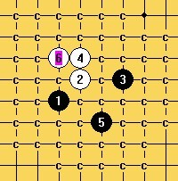

明教大峡月人民币悬赏题（共十二题）
首页
妖刀天下
#1 <font color="red">明教大峡月人民币悬赏题（共十二题）</font> 作者：失落刀 发表时间：2011-1-12 22:34:41
昨日J-20首飞亮相，估计是世界排名第一的隐形飞机。
大峡月今日开始悬赏，悬赏金共计1200--1600元。
闲话少叙，上图。
感谢潇洒提供悬赏题目。
［此帖子已被 失落刀 在 2011-1-12 23:05:57 编辑过］
#2 Re:明教大峡月人民币悬赏题（共十二题） 作者：失落刀 发表时间：2011-1-12 22:37:33
=======上图对应的爱五子棋谱代码如下，以便你拆解：========
h8i9k9i10i7
======================================================第一题：如图为黑必胜一打。
求黑必胜二打地毯（如果有）悬赏100元。
一个题目悬赏金一份。悬赏期一年。
要求应征答案无偿、公开及地毯补丁的更新（如果需要），其他细节同明教大残月人民币悬赏题（共四题）解释权归明教所有。
若有不明确之处应提前问清楚，否则若有歧义，或许对应征者不利。
应征者需对自己地毯版权负责，明教不负责审核版权。
感谢大家积极应征，悬赏没有其他意思，只是为了表示对地毯工作者的感谢。
以下题目相关文字说明基本相同。不重复。
［此帖子已被 失落刀 在 2011-1-12 22:39:01 编辑过］
#3 Re:明教大峡月人民币悬赏题（共十二题） 作者：失落刀 发表时间：2011-1-12 22:41:11
=======上图对应的爱五子棋谱代码如下，以便你拆解：========
h8i9k9g9j8
======================================================第二题：如图为黑必胜一打。
求黑必胜二打地毯（如果有）悬赏100元。
［此帖子已被 失落刀 在 2011-1-12 22:41:35 编辑过］
#4 Re:明教大峡月人民币悬赏题（共十二题） 作者：失落刀 发表时间：2011-1-12 22:43:17
=======上图对应的爱五子棋谱代码如下，以便你拆解：========
h8i9k9g8j9
======================================================第三题：如图为黑必胜一打。
求黑必胜二打地毯（如果有）悬赏100元。
［此帖子已被 失落刀 在 2011-1-12 22:43:52 编辑过］
#5 Re:明教大峡月人民币悬赏题（共十二题） 作者：白河愁 发表时间：2011-1-12 22:44:33
围观现场直播
#6 Re:明教大峡月人民币悬赏题（共十二题） 作者：失落刀 发表时间：2011-1-12 22:45:15
=======上图对应的爱五子棋谱代码如下，以便你拆解：========
h8i9k9i7i8
======================================================第四题：如图为黑必胜一打。
求黑必胜二打地毯（如果有）悬赏100元。
［此帖子已被 失落刀 在 2011-1-12 22:45:54 编辑过］
#7 Re:明教大峡月人民币悬赏题（共十二题） 作者：失落刀 发表时间：2011-1-12 22:49:10
=======上图对应的爱五子棋谱代码如下，以便你拆解：========
h8i9k9h9
======================================================第五题：求黑一打必胜地毯谱（如果有）悬赏人民币100元。
［此帖子已被 失落刀 在 2011-1-12 22:49:40 编辑过］
#8 Re:明教大峡月人民币悬赏题（共十二题） 作者：失落刀 发表时间：2011-1-12 22:52:27
=======上图对应的爱五子棋谱代码如下，以便你拆解：========
h8i9k9h9
======================================================第六题：求黑二打必胜地毯谱（如果有）悬赏人民币100元。
备注：该题曾经在大残月里面悬赏过。
同理：或白必胜地毯谱（悬赏人民币200元）。
［此帖子已被 失落刀 在 2011-1-12 22:53:17 编辑过］
#9 Re:明教大峡月人民币悬赏题（共十二题） 作者：失落刀 发表时间：2011-1-12 22:55:39
=======上图对应的爱五子棋谱代码如下，以便你拆解：========
h8i9k9h7
======================================================第七题：求黑一打必胜地毯谱（如果有）悬赏人民币100元。
［此帖子已被 失落刀 在 2011-1-12 22:56:04 编辑过］
#10 Re:明教大峡月人民币悬赏题（共十二题） 作者：失落刀 发表时间：2011-1-12 22:57:10
=======上图对应的爱五子棋谱代码如下，以便你拆解：========
h8i9k9h7
======================================================第八题：求黑二打必胜地毯谱（如果有）悬赏人民币100元。
同理：或白必胜地毯谱（悬赏人民币200元）。
［此帖子已被 失落刀 在 2011-1-12 22:57:43 编辑过］
#11 Re:明教大峡月人民币悬赏题（共十二题） 作者：失落刀 发表时间：2011-1-12 22:59:13
=======上图对应的爱五子棋谱代码如下，以便你拆解：========
h8i9k9j7
======================================================第九题：求黑一打必胜地毯谱（如果有）悬赏人民币100元。
［此帖子已被 失落刀 在 2011-1-12 22:59:36 编辑过］
#12 Re:明教大峡月人民币悬赏题（共十二题） 作者：白河愁 发表时间：2011-1-12 23:00:30
8楼和9楼的可以白必胜么
我觉得可以考虑把200元改成9000元- -
#13 Re:明教大峡月人民币悬赏题（共十二题） 作者：失落刀 发表时间：2011-1-12 23:01:03
=======上图对应的爱五子棋谱代码如下，以便你拆解：========
h8i9k9j7
======================================================第十题：求黑二打必胜地毯谱（如果有）悬赏人民币100元。
同理：或白必胜地毯谱（悬赏人民币200元）。
［此帖子已被 失落刀 在 2011-1-12 23:01:41 编辑过］
#14 Re:明教大峡月人民币悬赏题（共十二题） 作者：失落刀 发表时间：2011-1-12 23:02:34
=======上图对应的爱五子棋谱代码如下，以便你拆解：========
h8i9k9j8
======================================================第十一题：求黑一打必胜地毯谱（如果有）悬赏人民币100元。
［此帖子已被 失落刀 在 2011-1-12 23:03:06 编辑过］
#15 Re:明教大峡月人民币悬赏题（共十二题） 作者：失落刀 发表时间：2011-1-12 23:04:01
=======上图对应的爱五子棋谱代码如下，以便你拆解：========
h8i9k9j8
======================================================第十二题：求黑二打必胜地毯谱（如果有）悬赏人民币100元。
同理：或白必胜地毯谱（悬赏人民币200元）。
［此帖子已被 失落刀 在 2011-1-12 23:04:23 编辑过］
#16 Re:Re:明教大峡月人民币悬赏题（共十二题） 作者：岳麓小棋后 发表时间：2011-1-12 23:22:02
围观花教主！！
#17 Re:明教大峡月人民币悬赏题（共十二题） 作者：小帮帮 发表时间：2011-1-13 0:27:45
第一，第二题，和最后两题极有可能突破
#18 Re:明教大峡月人民币悬赏题（共十二题） 作者：潇洒 发表时间：2011-1-14 11:37:14
围观
#19 Re:明教大峡月人民币悬赏题（共十二题） 作者：自来水 发表时间：2011-1-15 21:46:03
=======上图对应的爱五子棋谱代码如下，以便你拆解：========
h8i9k9i10j8i7i8k8j9h7j7j10
======================================================遭遇第一题唯一防后我方表示放弃- - ［ 失落刀 于 2011-1-15 22:32:12 时花20金币送鲜花一朵］
#20 Re:Re:明教大峡月人民币悬赏题（共十二题） 作者：吐血刀 发表时间：2011-1-27 23:08:20
引用：
原文由 小帮帮 发表于 2011-1-13 0:27:45 :
第一，第二题，和最后两题极有可能突破

#21 Re:Re:Re:明教大峡月人民币悬赏题（共十二题） 作者：逆刃 发表时间：2011-2-7 16:17:47
9楼第7题已经解决。地毯谱私下聊。
［ 失落刀 于 2011-2-8 9:48:47 时奖励此帖[金币加 100 威望加1］
［ 忧郁的双眼 于 2011-2-9 19:57:28 时奖励此帖[金币加 100 威望加1］
#22 Re:Re:Re:Re:明教大峡月人民币悬赏题（共十二题） 作者：逆刃 发表时间：2011-2-8 13:38:10
按要求上传LS所说的地毯谱，大伙多给点鲜花支持啊~！
 大峡月一个4一打必胜5.rar
大峡月一个4一打必胜5.rar
［ 冥王哈迪斯 于 2011-2-8 16:10:13 时花20金币送鲜花一朵］
［ 冥王哈迪斯 于 2011-2-8 16:10:29 时花20金币送鲜花一朵］
［ 冥王哈迪斯 于 2011-2-8 16:10:44 时花20金币送鲜花一朵］
［ 失落刀 于 2011-2-8 17:57:34 时花20金币送鲜花一朵］
［ 失落刀 于 2011-2-8 17:57:46 时花20金币送鲜花一朵］
［ 失落刀 于 2011-2-8 17:58:04 时花20金币送鲜花一朵］
［ 五子痴 于 2011-2-8 19:41:52 时花20金币送鲜花一朵］
［ 五子痴 于 2011-2-8 19:42:03 时花20金币送鲜花一朵］
［ 五子痴 于 2011-2-8 19:42:11 时花20金币送鲜花一朵］
［ 日月丽天 于 2011-2-9 14:48:37 时花20金币送鲜花一朵］
［ 忧郁的双眼 于 2011-2-9 19:57:13 时奖励此帖[金币加 100 威望加1］
#23 Re:明教大峡月人民币悬赏题（共十二题） 作者：冥王哈迪斯 发表时间：2011-2-8 16:11:28
逆刃老师，，辛苦了~
#24 Re:明教大峡月人民币悬赏题（共十二题） 作者：五子痴 发表时间：2011-2-8 19:44:03
呵呵，这个4手03年的时候在联众中级房间风靡一时，时隔8年，终于被地毯了。［此帖子已被 五子痴 在 2011-2-8 19:44:51 编辑过］
#25 Re:明教大峡月人民币悬赏题（共十二题） 作者：死劲哭 发表时间：2011-2-8 20:50:33
地毯谱怎么制作呀
#26 Re:Re:明教大峡月人民币悬赏题（共十二题） 作者：空恨社小仙 发表时间：2011-2-9 13:35:42
此题地毯谱已经做好,Q币到帐即上传....
#27 Re:Re:明教大峡月人民币悬赏题（共十二题） 作者：空恨社小仙 发表时间：2011-2-9 13:46:45
引用：
原文由 失落刀 发表于 2011-1-12 22:55:39 :
=======上图对应的爱五子棋谱代码如下，以便你拆解：========
h8i9k9h7
======================================================第七题：求黑一打必胜地毯谱（如果有）悬赏人民币100元。
［此帖子已被 失落刀 在 2011-1-12 22:56:04 编辑过］
此题已经完成,加我QQ610799306空恨社小仙交流
#28 Re:明教大峡月人民币悬赏题（共十二题） 作者：失落刀 发表时间：2011-2-9 14:56:09
一个题目悬赏金一份。悬赏期一年。
要求应征答案无偿、公开及地毯补丁的更新（如果需要），其他细节同明教大残月人民币悬赏题（共四题）解释权归明教所有。
若有不明确之处应提前问清楚，否则若有歧义，或许对应征者不利。
应征者需对自己地毯版权负责，明教不负责审核版权。
感谢大家积极应征，悬赏没有其他意思，只是为了表示对地毯工作者的感谢。
以下题目相关文字说明基本相同。不重复。
上面是引用一楼的文字。
另外，第七题答案逆刃已经按要求上传。逆刃答案若无原则错漏，近期将赏金奉上。
感谢小仙应征，其他还有很多题目等待大家挑战。
#29 Re:Re:明教大峡月人民币悬赏题（共十二题） 作者：空恨社小仙 发表时间：2011-2-9 17:50:03
第八题另一黑胜点已经拆好,现把谱传上大家验证!大峡月一题.rar［ 逆刃 于 2011-2-9 17:55:21 时奖励此帖[金币加 100 威望加1］
［ 失落刀 于 2011-2-9 19:19:27 时花20金币送鲜花一朵］
［ 失落刀 于 2011-2-9 19:19:56 时花20金币送鲜花一朵］
［ 失落刀 于 2011-2-9 19:20:19 时花20金币送鲜花一朵］
［ 忧郁的双眼 于 2011-2-9 19:58:06 时奖励此帖[金币加 100 威望加1］
［ 日月丽天 于 2011-2-10 9:51:31 时花20金币送鲜花一朵］
［ 冥王哈迪斯 于 2011-2-19 20:17:00 时花20金币送鲜花一朵］
#30 Re:明教大峡月人民币悬赏题（共十二题） 作者：忧郁的双眼 发表时间：2011-2-9 19:59:31
色一个，回来就俩饼啊。
感谢失落刀教主慷慨解囊
感谢逆刃兄及小仙不辞辛劳
#31 Re:明教大峡月人民币悬赏题（共十二题） 作者：忧郁的双眼 发表时间：2011-2-9 20:04:30
忍影忍影忍影(240892142) 19:55:53
已收到，等下在论坛跟个贴，呵呵
忍影忍影忍影(240892142) 20:01:05
可惜爱五子棋网打不开
毒瘾毒瘾毒瘾(501957080) 20:01:57
要我替你发不？
毒瘾毒瘾毒瘾(501957080) 20:02:00
已到账？
忍影忍影忍影(240892142) 20:02:06
行啊
忍影忍影忍影(240892142) 20:02:11
谢了，呵呵
忍影忍影忍影(240892142) 20:02:17
我这里真打不开
#32 Re:明教大峡月人民币悬赏题（共十二题） 作者：空恨社小仙 发表时间：2011-2-9 20:22:19
第八题赏金已经到汇我支付宝账号,特此立贴说明!
#33 Re:明教大峡月人民币悬赏题（共十二题） 作者：中村 发表时间：2011-2-12 21:41:56
小弟愚见 我觉得第一题 拆了下 黑二打可以选八卦点
=======上图对应的爱五子棋谱代码如下，以便你拆解：========
h8i9k9i10j7
======================================================
#34 Re:明教大峡月人民币悬赏题（共十二题） 作者：失落刀 发表时间：2011-2-12 21:47:31

#35 Re:明教大峡月人民币悬赏题（共十二题） 作者：中村 发表时间：2011-2-12 22:04:28
=======上图对应的爱五子棋谱代码如下，以便你拆解：========
h8i9k9i10j7h10j8
======================================================
#36 Re:Re:明教大峡月人民币悬赏题（共十二题） 作者：中村 发表时间：2011-2-12 23:00:50
忘了 可以被抓。。。。额的神。。［ 失落刀 于 2011-2-13 0:12:33 时奖励此帖[金币加 100 威望加1］0+1
给神加个威望，必须的。
［此帖子已被 失落刀 在 2011-2-13 0:13:18 编辑过］
#37 Re:明教大峡月人民币悬赏题（共十二题） 作者：吐血刀 发表时间：2011-2-28 20:29:04
=======上图对应的爱五子棋谱代码如下，以便你拆解：========
h8i9k9
======================================================
#38 Re:明教大峡月人民币悬赏题（共十二题） 作者：花落无痕 发表时间：2011-7-27 21:19:00
日月神教，千秋万载